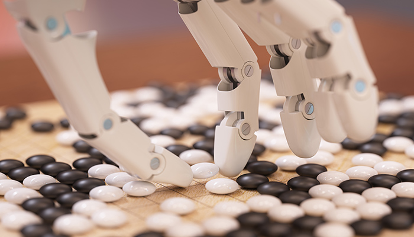

AlphaGo’s first formal match was against the reigning 3-times European Champion, Mr Fan Hui, in October 2015. Its 5-0 win was the first ever against a Go professional, and the results were published in full technical detail in the international journal, Nature.
成名战AlphaGo's 4-1 victory in Seoul, South Korea, in March 2016 was watched by over 200 million people worldwide. It was a landmark achievement that experts agreed was a decade ahead of its time, and earned AlphaGo a 9 dan professional ranking (the highest certification) - the first time a computer Go player had ever received the accolade.
神秘棋手Since then, AlphaGo has continued to surprise and amaze. In January 2017, an improved AlphaGo version was revealed as the online player "Master" which achieved 60 straight wins in online fast time-control games against top international Go players.
